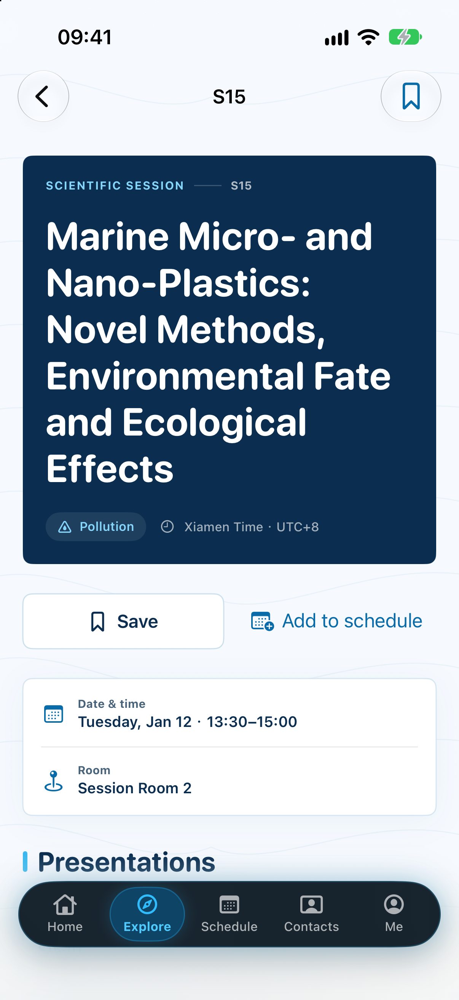
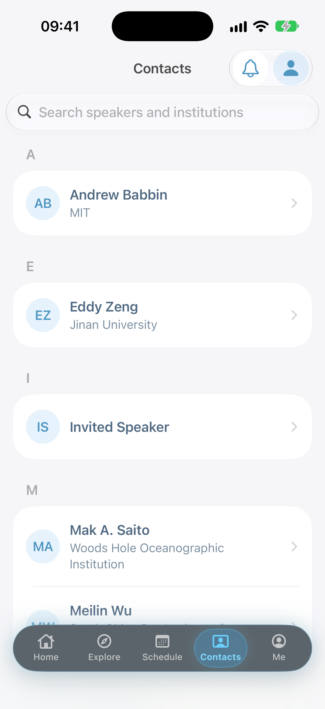

科研日志
按课题归类实验记录，标签和搜索让三个月前的记录还能找回来。
把科研日志、文献、课题、待办、日程和专注时间放在一起，帮你持续记录研究进展，安排下一步。iPhone 上的原生 App，iOS 18 起，不需要注册账号。
研究不是一堆散落的笔记和待办。研序把「我在做什么」和「我接下来要做什么」放在同一个界面里：实验记进日志，文献挂到课题，待办排进日程，专注时间用番茄钟记下来。
按课题归类实验记录，标签和搜索让三个月前的记录还能找回来。
读到哪里、想到什么、还差什么，跟课题放在一起，不散落在 PDF 里。
重复日程、本机提醒、番茄钟。把「今天做什么」变成一件看得见的事。
研序无需注册账号，也没有接入广告、追踪或分析 SDK。只有你主动使用 DOI、Zotero 或外部日报等功能时，App 才会连接相应服务。
给学术会议做的官方参会助手：议程、日程、报告人、会场，离线装进一台手机。参会者不用注册，主办方不用维护服务器。




第八届厦门海洋环境科学论坛的官方会议助手。整场大会的议程、报告人、会场信息全部离线可用，参会者不需要账号，也不会被追踪。
scholarlylife 是一个做科研工具的小团队。起点很简单：自己记不住实验做到哪一步，就写了研序；自己开会找不到下一场在哪，就写了会议 App。
所以我们不做大而全的平台，只做两件事：让研究者把研究记录下来，让参会的人在现场不慌。
学术那边的东西，放在 这里。